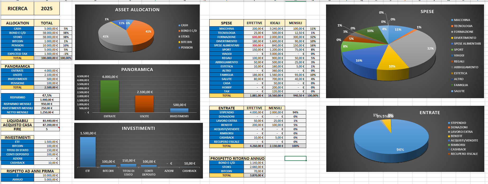
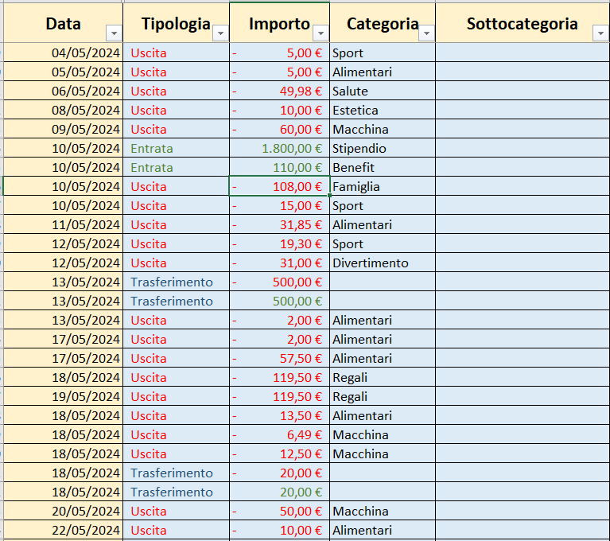
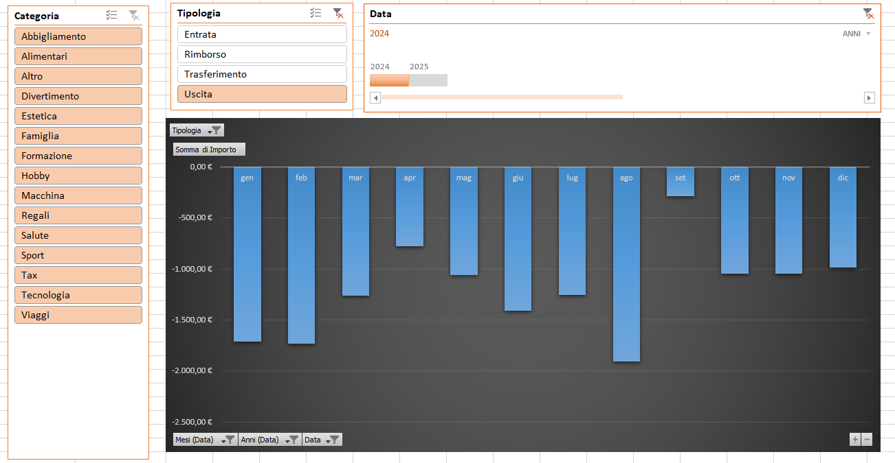

L'importanza della rilevazione dei dati finanziari: il primo passo
Gestire le proprie finanze personali è fondamentale per mantenere un equilibrio economico e pianificare il futuro con sicurezza. Rilevare con precisione entrate e uscite permette di avere una visione chiara della propria situazione economica, prendere decisioni informate e impostare obiettivi concreti per il risparmio e gli investimenti.
Perché è importante rilevare i dati finanziari?
1. Controllo e consapevolezza
Senza un monitoraggio costante, è facile perdere di vista la reale situazione economica. Raccogliere e analizzare i dati finanziari permette di capire da dove provengono le entrate, quali sono le principali spese e individuare eventuali sprechi.
2. Pianificazione e budgeting
Avere una chiara panoramica delle proprie finanze aiuta a creare un budget realistico. Questo permette di stabilire obiettivi finanziari a breve e lungo termine, come l'accantonamento di risparmi, la riduzione dei debiti o il raggiungimento di un determinato livello di investimenti.
3. Ottimizzazione delle risorse
Analizzando le entrate e le uscite, si possono identificare margini di miglioramento e opportunità di risparmio. Ad esempio, ridurre spese superflue o migliorare la gestione delle uscite mensili può fare una grande differenza nel lungo periodo.
4. Decisioni informate
Ogni decisione economica dovrebbe basarsi su dati concreti. La rilevazione accurata delle finanze consente di prendere decisioni ponderate su spese importanti, investimenti e risparmi futuri.
5. Conformità e controllo delle spese
Tenere traccia delle transazioni economiche è fondamentale per evitare sorprese a fine mese e gestire al meglio il proprio denaro. Una registrazione precisa facilita la comprensione dei flussi di denaro e permette di avere maggiore controllo sulle spese quotidiane.
La mia esperienza personale
Rilevo le mie entrate e le mie spese da parecchi anni. Inizialmente utilizzavo app di budgeting sul telefono, ma dal 2021/22 ho deciso di passare a Excel per avere maggiore controllo e personalizzazione sui miei dati.
Nel 2023, ho creato il mio personale spreadsheet per la gestione finanziaria, che sto ottimizzando tutt'ora. Ricordo perfettamente il momento in cui ho iniziato a costruire questo file: ero in aereo, in direzione Boston, con partenza da Milano. Durante il volo, ho messo insieme la struttura del mio foglio di calcolo, pensando a come renderlo il più efficace possibile per il mio utilizzo personale. Da allora, ho continuato a migliorarlo, adattandolo alle mie esigenze e implementando nuove funzionalità per analizzare al meglio le mie finanze.
Esempio del riepilogo (dati non reali)

Come li scrivo in modo che si aggiorni tutto automaticamente? (Dati inventati)

Utilizzare strumenti digitali
Esistono numerosi strumenti che semplificano la gestione finanziaria, come app di budgeting o fogli di calcolo personalizzati. Excel, Google Sheets o altri software di contabilità possono essere ottimi alleati per registrare entrate e uscite con precisione.
Analizzare periodicamente i dati
Non basta registrare le transazioni: è importante analizzarle regolarmente. Un report mensile o trimestrale può fornire insight preziosi sulla gestione del proprio denaro e permettere di apportare eventuali correzioni.
Ecco come analizzo i dati attraverso le tabelle Pivot di Excel

Impostare obiettivi di risparmio e investimento
Avere dati chiari sulle proprie finanze aiuta a stabilire obiettivi finanziari concreti, che siano il risparmio per un acquisto importante, la costruzione di un fondo di emergenza o l'investimento in strumenti finanziari.
Conclusione
La rilevazione dei dati finanziari è un'abitudine essenziale per gestire al meglio il proprio denaro. La mia esperienza personale mi ha insegnato che avere un sistema ben strutturato porta maggiore consapevolezza e sicurezza nelle decisioni economiche. Se vuoi migliorare la tua gestione finanziaria, inizia a registrare le tue entrate e uscite: può sembrare un piccolo passo, ma farà una grande differenza nel lungo periodo.